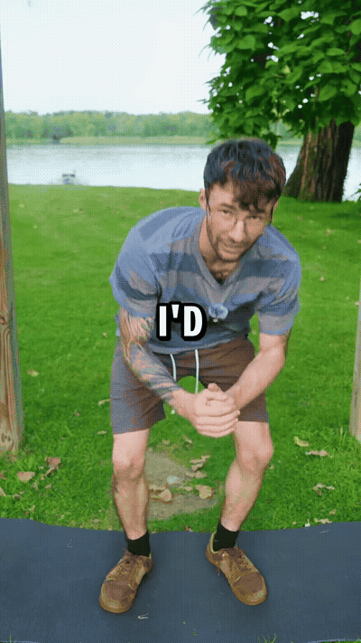
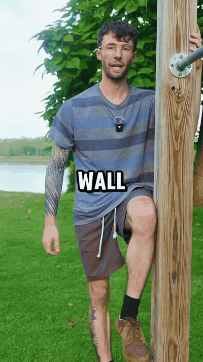
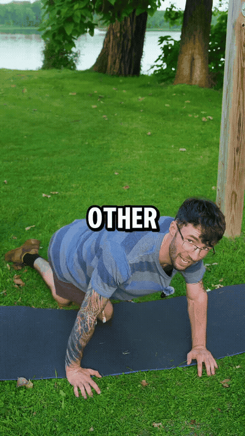
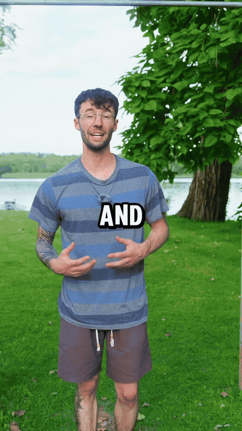

Lenny's 'first move if I woke up immobile': 30 seconds of controlled deep squat to restore hip and knee joint health. The key is the depth and control.

Active leg raises against a wall to improve hip rotation strength and mobility. Lenny warns: 'This one is harder than it looks.'

Cross one leg over the other and dip the hips to the side to mobilize the spine and decrease lower back stiffness.

If your mobility feels 'trash,' Lenny's prescription is to save this video and do these drills daily. 'More useful mobility tips' follow.
Full-chain mobility builds from the ground up. Each exercise targets different links in the chain: hip/knee joints → hip rotation → spinal mobility → daily habits.
Wall adds resistance, making mobility active. Leg raises against a wall turn a passive stretch into a strengthening movement — you're moving through the rotation, not just going through the motion.
Daily beats 'when it hurts'. Lenny recommends doing these even when things feel 'trash' — daily maintenance prevents stiffness from building up.